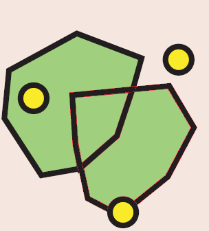

Todas las geometrias de la capa de origen de la regla deben contener al menos una geometria de la capa de destino de la regla. Esta regla es inversa de la regla "MustBeContainedBy". Es decir, si la capa A cumple la regla "MustBeContainedBy" con la capa B, la capa B cumplirá la relga "MustContains" con la capa A.
